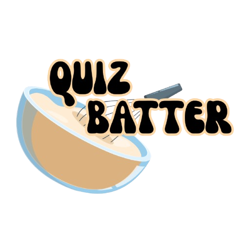

Projects

Legal Case Summarisation Project -- AIthena (Internship)
During my internship at AIthena, I helped build a legal case summariser using Legal-BERT, attention mechanisms, BiLSTM, and CRF layers. I worked on data cleaning, model training, and evaluation, gaining hands-on experience in NLP for legal documents. The project aimed to generate concise summaries that reduced the time needed to review legnthy judgements.

.HACKathon 2025 -- QuizBatter
A 48-hour hackathon project: a web app that generates quizzes from uploaded PDF notes. I focused on building the frontend and UI, designing a clean, interactive quiz-taking experience with instant scoring and feedback.
View on GitHub

Project Three
Project 3 Details